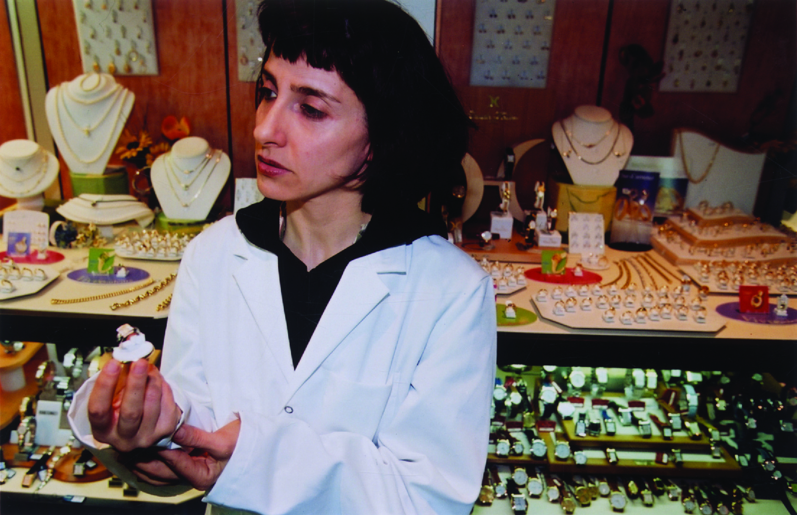
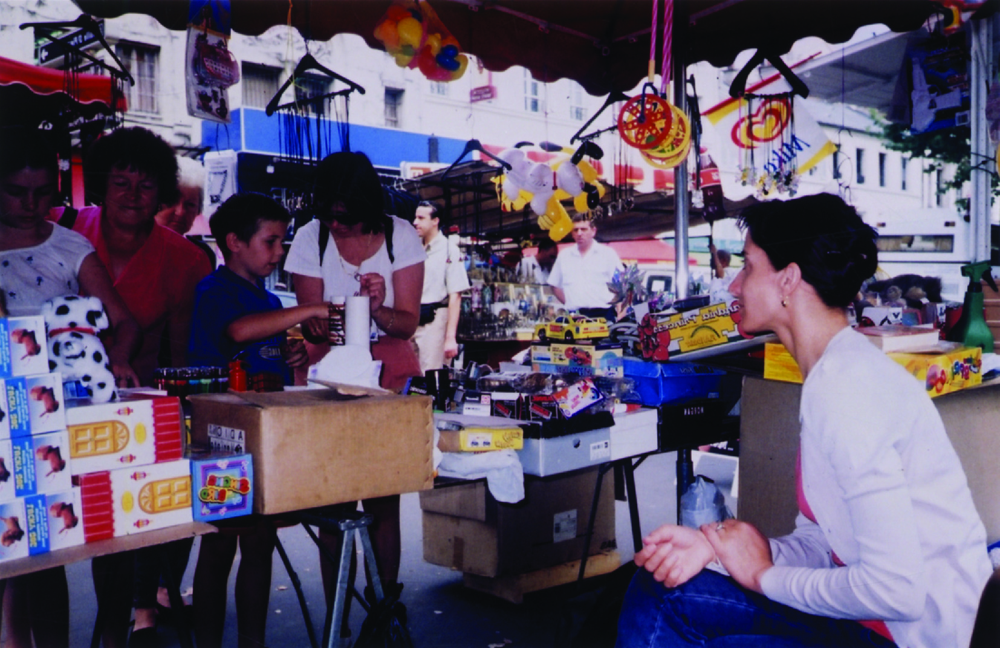
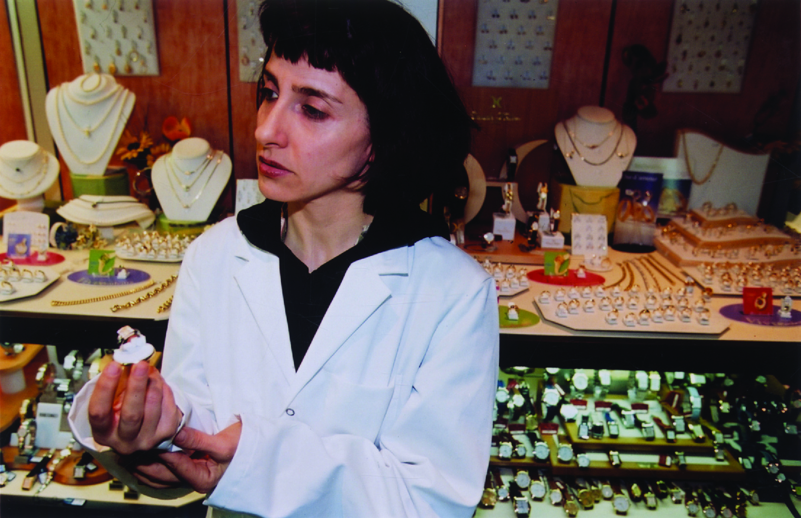
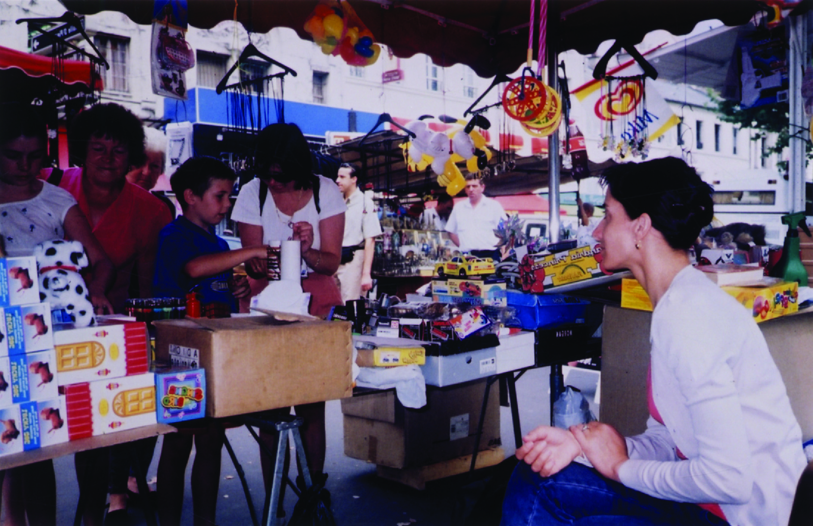

Performance devenue triptyque vidéo, Dolled up est la première œuvre que Claudia Triozzi consacre aux métiers.
L’artiste a elle-même travaillé à la chaîne en usine, lorsqu’elle avait entre 19 et 21 ans, avant de devenir
danseuse puis chorégraphe. Dans Dolled up, elle part à la rencontre de métiers qui ont de moins en moins de
visibilité en milieu urbain. Avec perspicacité et humour, elle confronte sa pratique de danseuse-chorégraphe à
d’autres registres d’activités non moins précises et répétitives.
«Il y a l’idée de se glisser dans différentes activités, d’essayer de comprendre la logique performative du
corps au travail : comment réaliser un travail qui peut être perçu de l’extérieur comme dur, répétitif,
monotone ? Ce qui m’intéresse là-dedans, c’est le plaisir, la satisfaction de la précision du geste, de
l’acte, et la possibilité d’en transmettre quelque chose».
Claudia Triozzi
Aussi semblait-il légitime que la question de l’emploi surgît un jour ou l’autre dans son travail. C’est
chose faite avec la dernière création Dolled’up, initiée à Châtres, programmée au riche festival d’Ajaccio
de danse contemporaine (Studio vidéo danse, du 19 au 24 mai) et bientôt prévue à Paris aux Inaccoutumées de
la Ménagerie de Verre. L’espace scénique semblant poser la même question lancinante : « Qu’aurai-je fait de
ma vie sans avoir suivi de hautes études (et si je n’étais pas devenue chorégraphe) ? »
Sur les vidéos accompagnées d’un diaporama figurent les différents apprentissages auxquels la chorégraphe
s’est livrée le plus sérieusement du monde auprès des commerçants de la ville du Berry. Claudia boulangère,
Claudia couturière, Claudia caissière… Elle ne joue cependant pas à un jeu de rôle qui serait instructif
mais guère impliquant. A travers tous les scénarios de vie possibles, apparaît non seulement une
anthropologie du quotidien vécu sous l’angle de multiples aliénations confortables ou épouvantables ,
mais aussi une mise en scène tragi-comique de l’incapacité chronique d’un individu, en dépit de la meilleure
volonté, à se fondre dans le moule des figures sociales telles qu’on peut les imaginer dans les projections
glorieuses de l’enfance (« I try, and I try », déplore-t-elle).
Pour ce faire, Claudia Triozzi a de nouveau conçu une machinerie savante. En contrepoint aux images, sur une
table percée d’un rectangle rempli de caramel fondant, surmontée d’un réseau mécanique d’objets fétiches et
fictifs, la danseuse s’adonne à un étrange cérémonial à base d’hosties, de partie de ping-pong et de casques
de Gaulois. De cet étrange rébus surgit un sentiment mêlé de fascination, de tristesse et de drôlerie, le
sentiment d’une place problématique à trouver dans le monde, mais une place essentielle, désormais occupée
par Claudia Triozzi dans la danse contemporaine.
Hugues Ghenassia